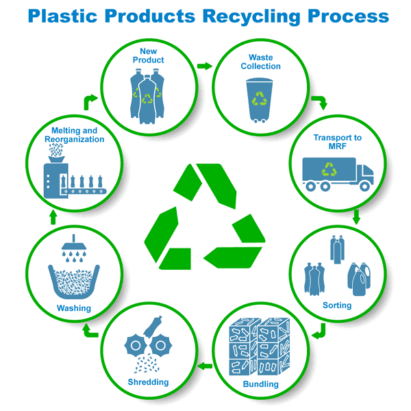
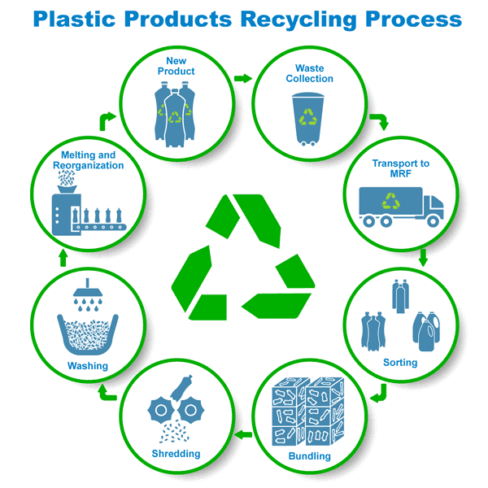

Overview
The recycling process involves several steps to turn waste materials into new, useful products. Understanding each step helps us appreciate the importance of recycling.

Learn about the recycling process and how you can contribute.
Learn MoreThe recycling process involves several steps to turn waste materials into new, useful products. Understanding each step helps us appreciate the importance of recycling.

Waste materials are collected from homes, businesses, and public places.
Collected materials are sorted by type (plastic, glass, metal, etc.) at recycling centers.
Materials are cleaned to remove impurities and prepare them for processing.
Cleaned materials are processed into new raw materials that can be used in manufacturing.
New products are manufactured using the recycled materials.
Consumers purchase products made from recycled materials, completing the cycle.
If you have any questions about recycling, please reach out to us.
Email: recycle@info.com
Address: 123 Recycle Road, Green City